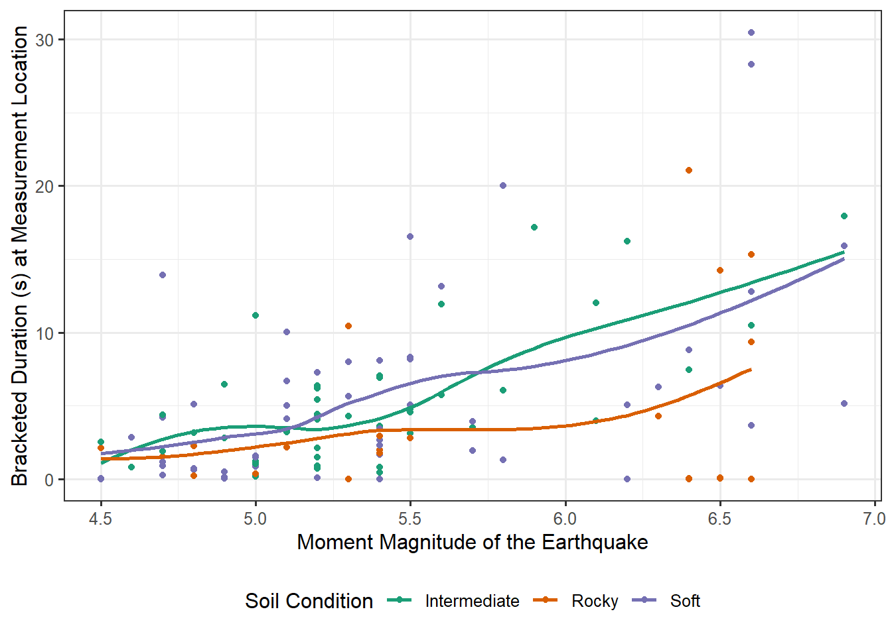

16 Summarizing Multivariable Data
For the Seismic Activity Case Study described in Chapter 13, we are primarily interested in characterizing the relationship between the bracketed duration and the magnitude of the corresponding earthquake. As we discussed in the previous chapters, this broad question could be refined into a question falling into one of three categories:
- Marginal Relationship: overall, does the bracketed duration and the magnitude of the corresponding earthquake tend to move together (are these two variables correlated)?
- Isolation of Effect: is there an association between the bracketed duration and the magnitude of the corresponding earthquake after accounting for the impact of additional variables? That is, is there an association between the bracketed duration and the magnitude of the corresponding earthquake “above and beyond” the association with additional variables?
- Interplay: how does the relationship between the bracketed duration and the magnitude of the corresponding earthquake depend on the type of soil?
As always, regardless of the question we ask, the key is developing summaries which help to address that question.
16.1 Characterizing the Marginal Relationship of Two Quantitative Variables
Suppose we are interested in the following question:
In general, does the bracketed duration tend to change as the magnitude of the corresponding earthquake changes?
This question is about the overall (marginal) relationship between these two quantitative variables. Graphically, we can examine the relationship between these two variables using a scatter plot. The response is placed on the y-axis and the predictor along the x-axis. Figure 16.1 illustrates the relationship between the bracketed duration at a location and the magnitude of the corresponding earthquake.
Figure 16.1 highlights several facets of the relationship. First, we note that as the magnitude of the event increases, the bracketed duration also tends to increase. This is intuitive — as the size of the earthquake increases, the length of time the ground shakes with extreme force increases. This is a trend; it is not a universal truth. For example, note the two cases highlighted in blue; the observation with the larger magnitude has a smaller bracketed duration, which is counter to the overall trend in the graphic. The research objective was to characterize the overall trend, not make global statements about all units in the population. Figure 16.1 also reveals that as the magnitude increases, the variability in the bracketed duration also tends to increase. That is, for earthquakes of small magnitudes, it seems fairly easy to anticipate the bracketed duration; however, the bracketed duration is much more difficult to anticipate for larger magnitudes.
A nice visual tool when exploring the relationship between two quantitative variables is a smoothing spline. The details of its construction are beyond the scope of this text, but we can think of it as representing where the average observed response is located for a particular value of the predictor; when computing the average response, information is borrowed form nearby points smoothing out the relationship (hence the name). We do want to point out that this is an exploratory device; we should be cautious about over-emphasizing relationships we observe from the smoother. Figure 16.2 illustrates a smoother relating the length of the bracketed duration with the magnitude of the earthquake. The addition of the spline confirms what we had previously stated about the relationship appearing fairly linear (as the magnitude of the earthquake increases so does the bracketed duration at a location). In addition to the spline, there is a confidence band (generalization of a confidence interval) around the line in order to convey the variability in the estimated smoother.
As we have seen, supplementing graphical summaries with numerical summaries can help convey our message. As an example, Figure 16.2 suggests there is a positive, linear relationship between the bracketed duration and the magnitude of the corresponding earthquake. But, can we quantify that relationship? Consider Figure 16.3, which consists of two hypothetical datasets. Both datasets illustrated exhibit a positive, linear relationship between the response and predictor; however, that relationship is much stronger (or more apparent) for Dataset A compared to Dataset B. It would be nice to have a numeric summary which captured this; such a metric is known as the correlation coefficient.
Definition 16.1 (Correlation Coefficient) A numerical measure of the strength and direction of the linear relationship between two quantitative variables.
The classical Pearson Correlation Coefficient \(r\) is given by the following formula:
\[r = \frac{\sum_{i=1}^{n} \left(x_i - \bar{x}\right)\left(y_i - \bar{y}\right)}{\sqrt{\sum_{i=1}^n \left(x_i - \bar{x}\right)^2 \sum_{i=1}^n \left(y_i - \bar{y}\right)^2}}\]
where \(\bar{x}\) and \(\bar{y}\) represent the sample means of the predictor and response, respectively.
The correlation between the bracketed duration and the magnitude of an earthquake in our sample is 0.497, indicating the two variables are positively linearly related, though perhaps the relationship is not strong.
Properties of the Correlation Coefficient
The Pearson Correlation Coefficient has the following key properties:
- It takes a value between -1 and 1.
- Negative values mean that the variables tend to move in opposite directions.
- Positive values mean that the variables tend to move in the same direction.
- It is unitless and therefore unaffected by unit changes in the variables.
The biggest thing to remember is that a correlation coefficient measures the strength of a linear relationship. A correlation of 0 does not mean that two variables are unrelated. It simply means they are not linearly related.
16.2 Visualizing the Impact of a Third Variable on the Marginal Relationship
In the previous section, we stated that in our sample, the bracketed duration tends to increase as the magnitude of the corresponding earthquake increases. It is reasonable to ask the following question:
Is the relationship between the bracketed duration and the magnitude different depending on the soil condition of where the measurement is taken?
That is, we want to determine the impact that a third variable (soil condition) has on the relationship we have observed. While the bulk of this unit will focus on inferential methods for the marginal relationship, graphically assessing questions isolating a single predictor or about the interplay of two predictors is fairly intuitive. In order to add more depth to our graphical representations, we make use of various features of the graphic — the color, shape, and/or size of the points used in plotting — as well as facets (multiple graphics each with a different subset of the data). Figure 16.4 uses color to distinguish between the three possible types of soil conditions at each measurement location. Notice the graphic allows us to both visualize the relationship between the bracketed duration and the magnitude for each soil condition but also facilitates our comparing these relationships across soil conditions.

Figure 16.4 illustrates that the relationship between the bracketed duration at a location and the magnitude of the corresponding earthquake is similar for both locations that have soft or intermediate soil conditions. However, for locations with rocky conditions, increases in the magnitude of the earthquake are associated with less pronounced increases in the bracketed duration. This potentially suggests that foundations on rocky soils are less subject to the effects of large earthquakes, at least with respect to the amount of time those areas are subject to extreme motion.
While our focus in this chapter has been on the scatter plot, our emphasis remains the same as when we used simpler graphics in the first unit — summaries need to be constructed to address the question of interest. And, regardless of the type of graphic, it communicates information about how the distribution of the response.